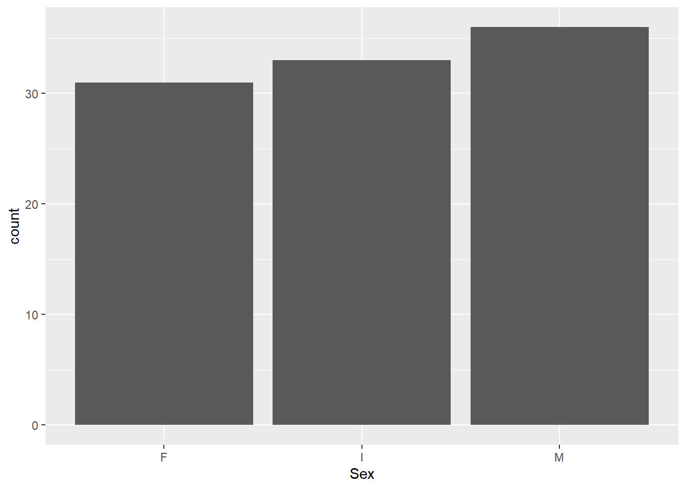
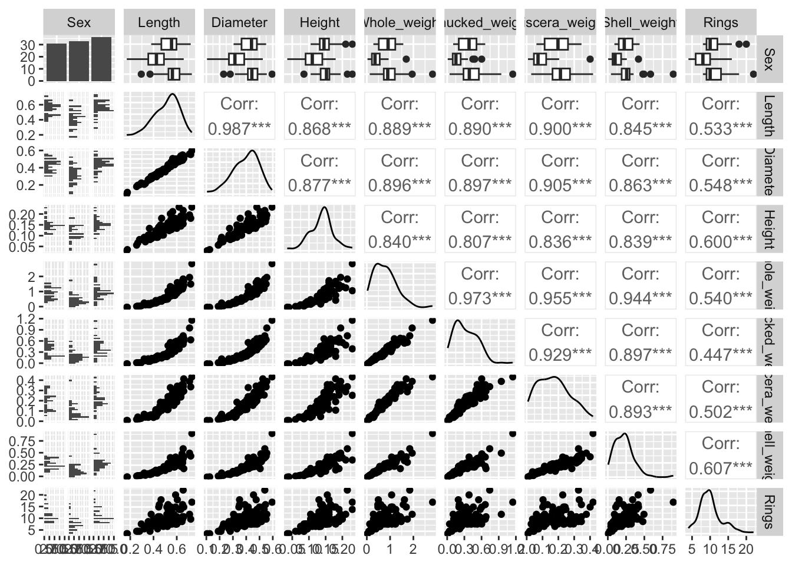
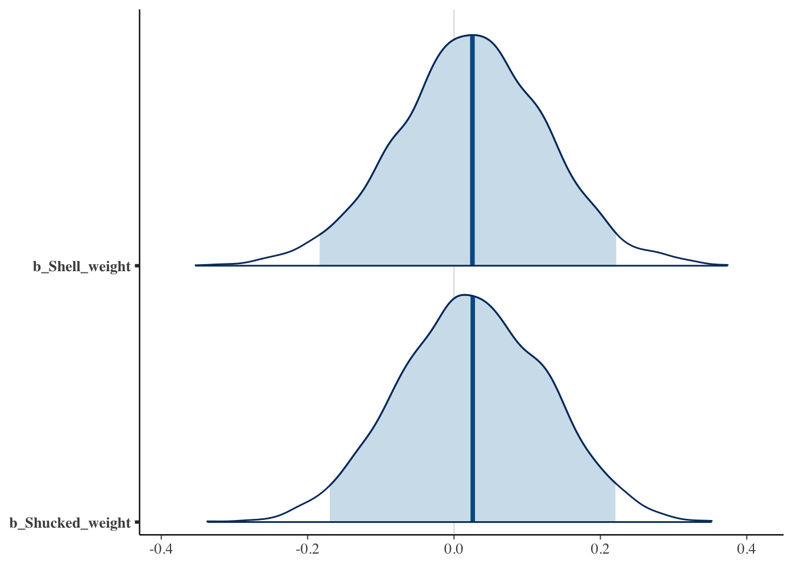

library(purrr)
library(tidyr)
library(ggplot2)
library(GGally)
library(brms)
library(projpred)
library(bayesplot)
set.seed(03072023)Exercises on Bayesian regularized regression
With these exercises, you will gain a practical understanding of different shrinkage priors and how to run a Bayesian regularized linear regression analysis using brms. In addition, we will consider the use of prior sensitivity analysis in Bayesian (regularized) analyses. Some knowledge of Bayesian analysis and familiarity with brms is assumed.
Preliminaries
First, we load several packages to run the analyses and visualize the data and results. We also set a random seed so that the results are reproducible.
Data: Abalone shells

Abalone are marine snails. Usually, the age of abalone is determined by cutting the shell, staining it, and counting the number of rings through a microscope. Adding 1.5 to the number of rings gives the age of the snail in years. In these exercises, we will try to circumvent this time-consuming task by predicting the age of abalone on alternative measurements which are easier to obtain.
The data (Nash and Ford 1995) can be downloaded here. In addition to the number of rings, which we will try to predict, the data set includes one categorical variable (Sex1) and seven continuous measurements. See the description of the data set for more details on these variables.
After you have downloaded the data and saved it in your working directory, load the data:
dat <- read.table("./abalone.data", sep = ",")
dim(dat)[1] 4177 9As you can see, the data contains 4177 observations of nine variables. To keep the computation time feasible, we will work with a subset of 100 observations for our training data.
obs.train <- sample.int(nrow(dat), size = 100, replace = FALSE)
train <- dat[obs.train, ]Before doing any analyses, it is a good idea to get familiar with your data. Although there are many different aspects you can look at (and many different ways of doing so), some things to focus on are: missing data, potential errors in the data, outliers, scales of the variables, and distributions.
head(train) V1 V2 V3 V4 V5 V6 V7 V8 V9
411 M 0.590 0.500 0.165 1.1045 0.4565 0.2425 0.3400 15
605 I 0.515 0.390 0.140 0.5555 0.2000 0.1135 0.2235 12
1558 I 0.425 0.325 0.110 0.3170 0.1350 0.0480 0.0900 8
2748 I 0.490 0.365 0.125 0.5585 0.2520 0.1260 0.1615 10
1916 F 0.600 0.470 0.135 0.9700 0.4655 0.1955 0.2640 11
2384 F 0.525 0.390 0.135 0.6005 0.2265 0.1310 0.2100 16summary(train) V1 V2 V3 V4
Length:100 Min. :0.1700 Min. :0.1050 Min. :0.0350
Class :character 1st Qu.:0.4387 1st Qu.:0.3300 1st Qu.:0.1138
Mode :character Median :0.5300 Median :0.4125 Median :0.1400
Mean :0.5091 Mean :0.3952 Mean :0.1378
3rd Qu.:0.5863 3rd Qu.:0.4662 3rd Qu.:0.1550
Max. :0.7300 Max. :0.5950 Max. :0.2300
V5 V6 V7 V8
Min. :0.0280 Min. :0.0095 Min. :0.0080 Min. :0.0050
1st Qu.:0.4121 1st Qu.:0.1675 1st Qu.:0.0900 1st Qu.:0.1237
Median :0.7380 Median :0.2978 Median :0.1653 Median :0.2152
Mean :0.7783 Mean :0.3313 Mean :0.1697 Mean :0.2189
3rd Qu.:1.0704 3rd Qu.:0.4819 3rd Qu.:0.2326 3rd Qu.:0.2863
Max. :2.8255 Max. :1.1465 Max. :0.4190 Max. :0.8970
V9
Min. : 4.00
1st Qu.: 8.00
Median :10.00
Mean :10.16
3rd Qu.:11.25
Max. :22.00 Variable 1 is actually a factor, so let’s recode it and let’s change the variable names so that they are easier to interpret:
train$V1 <- as.factor(train$V1)
colnames(train) <- c("Sex", "Length", "Diameter", "Height",
"Whole_weight", "Shucked_weight", "Viscera_weight",
"Shell_weight", "Rings")We can now visualize the data in different ways. We can, for example, consider the marginal distributions of the variables:
train %>%
ggplot(aes(Sex)) +
geom_bar()
train %>%
keep(is.numeric) %>%
gather() %>%
ggplot(aes(value)) +
facet_wrap(~ key, scales = "free") +
geom_histogram()
We can also visualize the bivariate relationships between variables. The code below shows paired scatterplots on the lower diagonal, correlations on the upper diagonal and marginal distributions on the diagonal.
Recreate this plot and try to separate the plots based on the categorical variable Sex (hint: you can add a colour variable via the aes() function as in a regular ggplot.
ggpairs(train)
Assumptions
Since we will be running a linear regression model to predict the age of the abalone, you should check the assumptions of the model first. We will not review the assumptions of regression analysis in detail here, but some observations based on the preliminary visualizations are worth noting. First, the lower diagonal indicates some non-linear bivariate relationships. However, these exist between the dependent variables rather than the independent and dependent variables so that should not be an issue. Second, correlations between the dependent variables are quite high. This multicollinearity is good to be aware of because in traditional regression analysis, this can cause the variance of the estimated regression coefficients to increase. Fortunately, one of the advantages of using regularization is that it will reduce the variance by introducing some bias. In addition to these observations, it is always a good idea to check your data for outliers since these can heavily influence the results. If variables contain observations that are theoretically impossible, these can be removed. Otherwise, it is recommended to run the analysis with and without outliers to assess the robustness of the results to the removal of outliers. Finally, in traditional linear regression analysis, it is assumed that the residuals are normally distributed with a constant variance \(\sigma^2\). This assumption underlies the Bayesian regression model as well. However, violations of this assumption are less problematic since the Bayesian framework does not rely on p-values and posterior predictive checks can be used to indicate potential violations.
Predicting the age of abalone without regularization
For reference, we will start with a Bayesian regression analysis without regularization. In this application, this is possible because we have more observations than variables in our model. However, as the number of observations per variable decreases, regularization becomes more useful to avoid overfitting and ultimately, as the number of variables exceeds the number of observations, regularization is needed to run the model (McNeish 2015). Apart from the issue of overfitting, regularization is useful to identify which variables are important in predicting the outcome, in this case: the age of abalone.
Run a regression analysis on the training data, using all variables to predict the age of abalone (i.e., the Rings variable). Do you recall which priors brms uses by default? How could you check which priors are being used?
Show the code
fit_default <- brm(Rings ~ ., data = train)
prior_summary(fit_default) We would like to select those variables that are most important in predicting abalone age. One way of doing this is by considering the 95% credible interval. This Bayesian equivalent of the classical confidence interval can be interpreted as being the interval in which the true value lies with 95% probability. If zero is included in this interval for a given predictor, we might therefore conclude that it is likely that the true effect is zero and exclude that predictor. Consider the 95% credible intervals: which predictors would you exclude and which predictors would be retained? Write this down for future reference.
Show the code
summary(fit_default)
# Selected predictors: SexM and Shell_weightPredicting the age of abalone with regularization
We will now run the analysis with regularization. We focus on the most simple shrinkage prior possible: a normal prior with a small variance2.
In brms, the normal prior is specified with a mean and standard deviation. So if we wish to specify a prior with a variance of \(\sigma^2 = 0.01\), we should take the square root of this value (sqrt(0.01)) to obtain the standard deviation \(\sigma\). We can add the prior by adding the argument prior = prior(normal(0, 0.1) to the brm call. Run the regularized analysis and use the 95% credible intervals to decide which variables are relevant in predicting the age of abalone. While you are waiting for the model to compile and sample, think about what results you would expect. Specifically, do you think we will select less or more variables compared to the previous, default analysis?
Show the code
fit_ridge <- brm(Rings ~ ., data = train,
prior = prior(normal(0, 0.1)),
refresh = 0, silent = 2)Running /Library/Frameworks/R.framework/Resources/bin/R CMD SHLIB foo.c
clang -arch arm64 -I"/Library/Frameworks/R.framework/Resources/include" -DNDEBUG -I"/Users/Erp00018/Library/R/arm64/4.2/library/Rcpp/include/" -I"/Users/Erp00018/Library/R/arm64/4.2/library/RcppEigen/include/" -I"/Users/Erp00018/Library/R/arm64/4.2/library/RcppEigen/include/unsupported" -I"/Users/Erp00018/Library/R/arm64/4.2/library/BH/include" -I"/Users/Erp00018/Library/R/arm64/4.2/library/StanHeaders/include/src/" -I"/Users/Erp00018/Library/R/arm64/4.2/library/StanHeaders/include/" -I"/Users/Erp00018/Library/R/arm64/4.2/library/RcppParallel/include/" -I"/Users/Erp00018/Library/R/arm64/4.2/library/rstan/include" -DEIGEN_NO_DEBUG -DBOOST_DISABLE_ASSERTS -DBOOST_PENDING_INTEGER_LOG2_HPP -DSTAN_THREADS -DUSE_STANC3 -DSTRICT_R_HEADERS -DBOOST_PHOENIX_NO_VARIADIC_EXPRESSION -DBOOST_NO_AUTO_PTR -include '/Users/Erp00018/Library/R/arm64/4.2/library/StanHeaders/include/stan/math/prim/fun/Eigen.hpp' -D_REENTRANT -DRCPP_PARALLEL_USE_TBB=1 -I/opt/R/arm64/include -fPIC -falign-functions=64 -Wall -g -O2 -c foo.c -o foo.o
In file included from <built-in>:1:
In file included from /Users/Erp00018/Library/R/arm64/4.2/library/StanHeaders/include/stan/math/prim/fun/Eigen.hpp:22:
In file included from /Users/Erp00018/Library/R/arm64/4.2/library/RcppEigen/include/Eigen/Dense:1:
In file included from /Users/Erp00018/Library/R/arm64/4.2/library/RcppEigen/include/Eigen/Core:88:
/Users/Erp00018/Library/R/arm64/4.2/library/RcppEigen/include/Eigen/src/Core/util/Macros.h:628:1: error: unknown type name 'namespace'
namespace Eigen {
^
/Users/Erp00018/Library/R/arm64/4.2/library/RcppEigen/include/Eigen/src/Core/util/Macros.h:628:16: error: expected ';' after top level declarator
namespace Eigen {
^
;
In file included from <built-in>:1:
In file included from /Users/Erp00018/Library/R/arm64/4.2/library/StanHeaders/include/stan/math/prim/fun/Eigen.hpp:22:
In file included from /Users/Erp00018/Library/R/arm64/4.2/library/RcppEigen/include/Eigen/Dense:1:
/Users/Erp00018/Library/R/arm64/4.2/library/RcppEigen/include/Eigen/Core:96:10: fatal error: 'complex' file not found
#include <complex>
^~~~~~~~~
3 errors generated.
make: *** [foo.o] Error 1Show the code
summary(fit_ridge) Family: gaussian
Links: mu = identity; sigma = identity
Formula: Rings ~ Sex + Length + Diameter + Height + Whole_weight + Shucked_weight + Viscera_weight + Shell_weight
Data: train (Number of observations: 100)
Draws: 4 chains, each with iter = 2000; warmup = 1000; thin = 1;
total post-warmup draws = 4000
Population-Level Effects:
Estimate Est.Error l-95% CI u-95% CI Rhat Bulk_ESS Tail_ESS
Intercept 10.07 0.36 9.39 10.77 1.00 8320 2799
SexI -0.06 0.10 -0.25 0.13 1.00 7996 2956
SexM 0.03 0.09 -0.15 0.22 1.00 7914 2862
Length 0.02 0.10 -0.19 0.21 1.00 9955 2362
Diameter 0.01 0.10 -0.17 0.21 1.00 9454 2722
Height 0.01 0.10 -0.18 0.19 1.00 9042 3061
Whole_weight 0.08 0.10 -0.12 0.27 1.00 8708 2864
Shucked_weight 0.03 0.10 -0.17 0.23 1.00 8589 2573
Viscera_weight 0.02 0.10 -0.18 0.22 1.00 8969 2595
Shell_weight 0.03 0.10 -0.17 0.22 1.00 10019 3107
Family Specific Parameters:
Estimate Est.Error l-95% CI u-95% CI Rhat Bulk_ESS Tail_ESS
sigma 3.35 0.24 2.92 3.88 1.00 8325 3028
Draws were sampled using sampling(NUTS). For each parameter, Bulk_ESS
and Tail_ESS are effective sample size measures, and Rhat is the potential
scale reduction factor on split chains (at convergence, Rhat = 1).Show the code
# None of the variables are selectedWe have now applied a very influential shrinkage prior, resulting in a large amount of regularization. As a result, the posterior distributions are narrowly concentrated around zero. This can be seen in the summary, based on the small estimated regression coefficients and narrow credible intervals. However, an advantage of the Bayesian framework is that we can also plot the posterior distributions. With the code below we compare the posterior densities for three parameters with and without regularization. The prob argument is used to specify the shaded probability in the density. Do you see the influence of the normal shrinkage prior reflected in the plotted posterior densities?
mcmc_areas(fit_default,
pars = c("b_Diameter", "b_Whole_weight", "b_Shell_weight"),
prob_outer = 1, prob = 0.95)
mcmc_areas(fit_ridge,
pars = c("b_Diameter", "b_Whole_weight", "b_Shell_weight"),
prob_outer = 1, prob = 0.95)Similar plots can be created for the other parameters in the model: regression coefficients can be named using b_variable_name and the residual error standard deviation is named sigma. Consider the posterior densities for sigma across both fitobjects; are they equal? Do you expect them to be equal based on the prior distributions?
Show the code
mcmc_areas(fit_default,
pars = c("sigma"),
prob_outer = 1, prob = 0.95)
prior_summary(fit_default)
mcmc_areas(fit_ridge,
pars = c("sigma"),
prob_outer = 1, prob = 0.95)
prior_summary(fit_default)
# The posterior densities are not the same, but the priors are.
# The shrinkage prior influences the regression coefficients by
# pulling them to zero which in turn influences the residuals and
# thus the residual standard deviation, which is larger for the
# shrinkage prior.Prior sensitivity analysis: Considering various shrinkage priors
So far we have only considered a normal shrinkage prior with a small variance. This prior exerted a lot of influence on the results, pulling all regression coefficients to zero. We will now investigate a few other shrinkage priors to get a feeling of their shrinkage behaviors.
brms offers a lot of flexibility in terms of prior distributions: you can define any distribution that is available in Stan as a prior. ?set_prior offers detailed documentation and various examples. Here, we will consider three options that, in addition to the normal prior used previously, offer a variety of shrinkage behaviors:
- Student-t prior: compared to the normal prior, this prior has heavier tails and thus allows substantial coefficients to escape the shrinkage more. The heaviness of the tails is directly related to the degrees of freedom parameter
nu, with smaller degrees of freedom leading to heavier tails. - Laplace prior: whereas the normal prior is the Bayesian equivalent of the traditional ridge penalty, the Laplace prior is the equivalent of the traditional lasso penalty.
brmseven has a specific function to set up this prior, which is used below. - Regularized horseshoe prior: this prior can be seen as most advanced. It is very peaked at zero, but also has very heavy tails. This makes this prior especially suitable to shrink the small, irrelevant effects to zero while keeping the substantial, relevant effects large.
Before using these priors, let’s visualize them to understand their behavior a bit better. First, we need draws from the prior distributions. To obtain these, we run brms using the argument sample_prior = "only". This will result in a fitobject containing only draws from the prior distribution. Use the code below to sample from the three shrinkage priors.
prior_t <- brm(Rings ~ ., data = train,
prior = set_prior("student_t(3, 0, 0.1)", class = "b"),
sample_prior = "only",
refresh = 0, silent = 2) Running /Library/Frameworks/R.framework/Resources/bin/R CMD SHLIB foo.c
clang -arch arm64 -I"/Library/Frameworks/R.framework/Resources/include" -DNDEBUG -I"/Users/Erp00018/Library/R/arm64/4.2/library/Rcpp/include/" -I"/Users/Erp00018/Library/R/arm64/4.2/library/RcppEigen/include/" -I"/Users/Erp00018/Library/R/arm64/4.2/library/RcppEigen/include/unsupported" -I"/Users/Erp00018/Library/R/arm64/4.2/library/BH/include" -I"/Users/Erp00018/Library/R/arm64/4.2/library/StanHeaders/include/src/" -I"/Users/Erp00018/Library/R/arm64/4.2/library/StanHeaders/include/" -I"/Users/Erp00018/Library/R/arm64/4.2/library/RcppParallel/include/" -I"/Users/Erp00018/Library/R/arm64/4.2/library/rstan/include" -DEIGEN_NO_DEBUG -DBOOST_DISABLE_ASSERTS -DBOOST_PENDING_INTEGER_LOG2_HPP -DSTAN_THREADS -DUSE_STANC3 -DSTRICT_R_HEADERS -DBOOST_PHOENIX_NO_VARIADIC_EXPRESSION -DBOOST_NO_AUTO_PTR -include '/Users/Erp00018/Library/R/arm64/4.2/library/StanHeaders/include/stan/math/prim/fun/Eigen.hpp' -D_REENTRANT -DRCPP_PARALLEL_USE_TBB=1 -I/opt/R/arm64/include -fPIC -falign-functions=64 -Wall -g -O2 -c foo.c -o foo.o
In file included from <built-in>:1:
In file included from /Users/Erp00018/Library/R/arm64/4.2/library/StanHeaders/include/stan/math/prim/fun/Eigen.hpp:22:
In file included from /Users/Erp00018/Library/R/arm64/4.2/library/RcppEigen/include/Eigen/Dense:1:
In file included from /Users/Erp00018/Library/R/arm64/4.2/library/RcppEigen/include/Eigen/Core:88:
/Users/Erp00018/Library/R/arm64/4.2/library/RcppEigen/include/Eigen/src/Core/util/Macros.h:628:1: error: unknown type name 'namespace'
namespace Eigen {
^
/Users/Erp00018/Library/R/arm64/4.2/library/RcppEigen/include/Eigen/src/Core/util/Macros.h:628:16: error: expected ';' after top level declarator
namespace Eigen {
^
;
In file included from <built-in>:1:
In file included from /Users/Erp00018/Library/R/arm64/4.2/library/StanHeaders/include/stan/math/prim/fun/Eigen.hpp:22:
In file included from /Users/Erp00018/Library/R/arm64/4.2/library/RcppEigen/include/Eigen/Dense:1:
/Users/Erp00018/Library/R/arm64/4.2/library/RcppEigen/include/Eigen/Core:96:10: fatal error: 'complex' file not found
#include <complex>
^~~~~~~~~
3 errors generated.
make: *** [foo.o] Error 1prior_lasso <- brm(Rings ~ ., data = train,
prior = set_prior(lasso(df = 1, scale = 1), class = "b"),
sample_prior = "only",
refresh = 0, silent = 2)Running /Library/Frameworks/R.framework/Resources/bin/R CMD SHLIB foo.c
clang -arch arm64 -I"/Library/Frameworks/R.framework/Resources/include" -DNDEBUG -I"/Users/Erp00018/Library/R/arm64/4.2/library/Rcpp/include/" -I"/Users/Erp00018/Library/R/arm64/4.2/library/RcppEigen/include/" -I"/Users/Erp00018/Library/R/arm64/4.2/library/RcppEigen/include/unsupported" -I"/Users/Erp00018/Library/R/arm64/4.2/library/BH/include" -I"/Users/Erp00018/Library/R/arm64/4.2/library/StanHeaders/include/src/" -I"/Users/Erp00018/Library/R/arm64/4.2/library/StanHeaders/include/" -I"/Users/Erp00018/Library/R/arm64/4.2/library/RcppParallel/include/" -I"/Users/Erp00018/Library/R/arm64/4.2/library/rstan/include" -DEIGEN_NO_DEBUG -DBOOST_DISABLE_ASSERTS -DBOOST_PENDING_INTEGER_LOG2_HPP -DSTAN_THREADS -DUSE_STANC3 -DSTRICT_R_HEADERS -DBOOST_PHOENIX_NO_VARIADIC_EXPRESSION -DBOOST_NO_AUTO_PTR -include '/Users/Erp00018/Library/R/arm64/4.2/library/StanHeaders/include/stan/math/prim/fun/Eigen.hpp' -D_REENTRANT -DRCPP_PARALLEL_USE_TBB=1 -I/opt/R/arm64/include -fPIC -falign-functions=64 -Wall -g -O2 -c foo.c -o foo.o
In file included from <built-in>:1:
In file included from /Users/Erp00018/Library/R/arm64/4.2/library/StanHeaders/include/stan/math/prim/fun/Eigen.hpp:22:
In file included from /Users/Erp00018/Library/R/arm64/4.2/library/RcppEigen/include/Eigen/Dense:1:
In file included from /Users/Erp00018/Library/R/arm64/4.2/library/RcppEigen/include/Eigen/Core:88:
/Users/Erp00018/Library/R/arm64/4.2/library/RcppEigen/include/Eigen/src/Core/util/Macros.h:628:1: error: unknown type name 'namespace'
namespace Eigen {
^
/Users/Erp00018/Library/R/arm64/4.2/library/RcppEigen/include/Eigen/src/Core/util/Macros.h:628:16: error: expected ';' after top level declarator
namespace Eigen {
^
;
In file included from <built-in>:1:
In file included from /Users/Erp00018/Library/R/arm64/4.2/library/StanHeaders/include/stan/math/prim/fun/Eigen.hpp:22:
In file included from /Users/Erp00018/Library/R/arm64/4.2/library/RcppEigen/include/Eigen/Dense:1:
/Users/Erp00018/Library/R/arm64/4.2/library/RcppEigen/include/Eigen/Core:96:10: fatal error: 'complex' file not found
#include <complex>
^~~~~~~~~
3 errors generated.
make: *** [foo.o] Error 1Warning: There were 4 chains where the estimated Bayesian Fraction of Missing Information was low. See
https://mc-stan.org/misc/warnings.html#bfmi-lowWarning: Examine the pairs() plot to diagnose sampling problemsWarning: The largest R-hat is 1.07, indicating chains have not mixed.
Running the chains for more iterations may help. See
https://mc-stan.org/misc/warnings.html#r-hatWarning: Bulk Effective Samples Size (ESS) is too low, indicating posterior means and medians may be unreliable.
Running the chains for more iterations may help. See
https://mc-stan.org/misc/warnings.html#bulk-essWarning: Tail Effective Samples Size (ESS) is too low, indicating posterior variances and tail quantiles may be unreliable.
Running the chains for more iterations may help. See
https://mc-stan.org/misc/warnings.html#tail-essprior_hs <- brm(Rings ~ ., data = train,
prior = set_prior(horseshoe(df = 1, scale_global = 1,
df_global = 1, scale_slab = 2,
df_slab = 4, par_ratio = NULL,
autoscale = TRUE), class = "b"),
sample_prior = "only",
refresh = 0, silent = 2)Running /Library/Frameworks/R.framework/Resources/bin/R CMD SHLIB foo.c
clang -arch arm64 -I"/Library/Frameworks/R.framework/Resources/include" -DNDEBUG -I"/Users/Erp00018/Library/R/arm64/4.2/library/Rcpp/include/" -I"/Users/Erp00018/Library/R/arm64/4.2/library/RcppEigen/include/" -I"/Users/Erp00018/Library/R/arm64/4.2/library/RcppEigen/include/unsupported" -I"/Users/Erp00018/Library/R/arm64/4.2/library/BH/include" -I"/Users/Erp00018/Library/R/arm64/4.2/library/StanHeaders/include/src/" -I"/Users/Erp00018/Library/R/arm64/4.2/library/StanHeaders/include/" -I"/Users/Erp00018/Library/R/arm64/4.2/library/RcppParallel/include/" -I"/Users/Erp00018/Library/R/arm64/4.2/library/rstan/include" -DEIGEN_NO_DEBUG -DBOOST_DISABLE_ASSERTS -DBOOST_PENDING_INTEGER_LOG2_HPP -DSTAN_THREADS -DUSE_STANC3 -DSTRICT_R_HEADERS -DBOOST_PHOENIX_NO_VARIADIC_EXPRESSION -DBOOST_NO_AUTO_PTR -include '/Users/Erp00018/Library/R/arm64/4.2/library/StanHeaders/include/stan/math/prim/fun/Eigen.hpp' -D_REENTRANT -DRCPP_PARALLEL_USE_TBB=1 -I/opt/R/arm64/include -fPIC -falign-functions=64 -Wall -g -O2 -c foo.c -o foo.o
In file included from <built-in>:1:
In file included from /Users/Erp00018/Library/R/arm64/4.2/library/StanHeaders/include/stan/math/prim/fun/Eigen.hpp:22:
In file included from /Users/Erp00018/Library/R/arm64/4.2/library/RcppEigen/include/Eigen/Dense:1:
In file included from /Users/Erp00018/Library/R/arm64/4.2/library/RcppEigen/include/Eigen/Core:88:
/Users/Erp00018/Library/R/arm64/4.2/library/RcppEigen/include/Eigen/src/Core/util/Macros.h:628:1: error: unknown type name 'namespace'
namespace Eigen {
^
/Users/Erp00018/Library/R/arm64/4.2/library/RcppEigen/include/Eigen/src/Core/util/Macros.h:628:16: error: expected ';' after top level declarator
namespace Eigen {
^
;
In file included from <built-in>:1:
In file included from /Users/Erp00018/Library/R/arm64/4.2/library/StanHeaders/include/stan/math/prim/fun/Eigen.hpp:22:
In file included from /Users/Erp00018/Library/R/arm64/4.2/library/RcppEigen/include/Eigen/Dense:1:
/Users/Erp00018/Library/R/arm64/4.2/library/RcppEigen/include/Eigen/Core:96:10: fatal error: 'complex' file not found
#include <complex>
^~~~~~~~~
3 errors generated.
make: *** [foo.o] Error 1Next, you can use the mcmc_areas function to plot the prior distributions for specific parameters. However, it can be more insightful to plot the prior distributions together in one figure. To do this, we first need to combine the prior draws. Then, we can plot the prior for a specific regression coefficient, for example b_Height:
draws_t <- as_draws_df(prior_t)
draws_t$prior <- "t"
draws_lasso <- as_draws_df(prior_lasso)
draws_lasso$prior <- "lasso"
draws_hs <- as_draws_df(prior_hs)
draws_hs$prior <- "hs"
sel <- c("b_SexI", "b_SexM", "b_Length", "b_Diameter", "b_Height",
"b_Whole_weight", "b_Shucked_weight", "b_Viscera_weight",
"b_Shell_weight", "prior")
draws <- rbind.data.frame(draws_t[, sel],
draws_lasso[, sel],
draws_hs[, sel])Warning: Dropping 'draws_df' class as required metadata was removed.
Warning: Dropping 'draws_df' class as required metadata was removed.
Warning: Dropping 'draws_df' class as required metadata was removed.ggplot(draws, aes(b_Height, colour=prior)) +
geom_density() 
This way, we can compare different parametric forms and see, for example, that with these settings the lasso and horseshoe priors generally look quite similarly whereas Student’s t prior has much lighter tails.
We can also adapt the hyperparameters of each prior. For the next exercise, pick one of the shrinkage priors (ridge, Student’s t, lasso, or horseshoe) and adapt the hyperparameters. Consider three or four different settings. For the lasso and horseshoe you can review the documentation for an interpretation of the hyperparameters via ?lasso or ?horseshoe. Note that the location of each prior should remain at zero to ensure shrinkage towards zero. Visualize the prior for different hyperparameter settings and try to reason whether you would expect different results in terms of shrinkage towards zero and, ultimately, variable selection. In addition to visualizing the prior distribution itself, you can also perform prior predictive checks and visualize possible distributions of data generated for a specific data set (see day 3).
Comparing results across different priors
Now that we have a good idea of the different shrinkage prior distributions, we can run the analysis for different prior specifications and compare the outcome of interest, in our case: the selection of variables to predict abalone age. Run the analysis with Student’s t, the lasso, and horseshoe priors specified above. You can also add one or more of the priors you investigated yourself. Compare the amount of shrinkage, for example by looking at the estimated regression coefficients or the full posteriors, as well as the number of selected variables based on the 95% credible intervals. Do the results differ across different shrinkage priors and are the differences in line with your intuition regarding the shrinkage behaviors of the priors?
Show the code
fit_t <- brm(Rings ~ ., data = train,
prior = set_prior("student_t(3, 0, 0.1)", class = "b"))
# Indicates no relevant variables (like the ridge)
fit_lasso <- brm(Rings ~ ., data = train,
prior = set_prior(lasso(df = 1, scale = 1), class = "b"))
# Selects SexM, Shell_weight, and Shucked_weight
fit_hs <- brm(Rings ~ ., data = train,
prior = set_prior(horseshoe(df = 1, scale_global = 1,
df_global = 1, scale_slab = 2,
df_slab = 4, par_ratio = NULL,
autoscale = TRUE), class = "b"))
# Selects SexM and Shell_weight
# Visualize differences
draws_ridge <- as_draws_df(fit_ridge)
draws_ridge$prior <- "ridge"
draws_t <- as_draws_df(fit_t)
draws_t$prior <- "t"
draws_lasso <- as_draws_df(fit_lasso)
draws_lasso$prior <- "lasso"
draws_hs <- as_draws_df(fit_hs)
draws_hs$prior <- "hs"
sel <- c("b_SexI", "b_SexM", "b_Length", "b_Diameter", "b_Height",
"b_Whole_weight", "b_Shucked_weight", "b_Viscera_weight",
"b_Shell_weight", "prior")
draws <- rbind.data.frame(draws_ridge[, sel],
draws_t[, sel],
draws_lasso[, sel],
draws_hs[, sel])
draws$id <- 1:nrow(draws)
draws_long <- gather(draws,
key = "parameter",
value = "value",
-prior)
ggplot(draws_long, aes(value, colour=prior)) +
geom_density() +
facet_wrap(~ parameter, scales = "free")
# We see very similar results for the ridge and Student's t; these priors shrink coefficients heavily, with no escape for larger coefficients. The lasso and horseshoe also show similar results and less shrinkage for some parameters, as we would expect based on the prior plots.Did we forget anything?
So far, we have done a lot: we have investigated different shrinkage priors and compared their influence in predicting abalone age. We have seen that different types of shrinkage priors have different prior densities which result in different shrinkage behaviors and ultimately, different results. However, as you considered the potential influence of the shrinkage priors you might already have wondered about the role that the scales of the variables play. This is actually a very important point in Bayesian analysis in general, and even more so in Bayesian regularization in particular. The scale of the variables will influence the plausible parameter space of the regression coefficients and this will influence the informativeness of the prior distribution. To illustrate this, consider one variable in our data set, the Length of the shells. In this data set, Length is measured in millimeter and if we use this variable in a simple linear regression to predict the abalone age, we get an estimated regression coefficient of 14.
fit <- lm(Rings ~ Length, data = train)
summary(fit)
Call:
lm(formula = Rings ~ Length, data = train)
Residuals:
Min 1Q Median 3Q Max
-3.5792 -1.9153 -0.8852 1.5569 9.5617
Coefficients:
Estimate Std. Error t value Pr(>|t|)
(Intercept) 2.207 1.306 1.689 0.0944 .
Length 15.621 2.503 6.240 1.12e-08 ***
---
Signif. codes: 0 '***' 0.001 '**' 0.01 '*' 0.05 '.' 0.1 ' ' 1
Residual standard error: 2.869 on 98 degrees of freedom
Multiple R-squared: 0.2844, Adjusted R-squared: 0.2771
F-statistic: 38.94 on 1 and 98 DF, p-value: 1.117e-08We can view this estimate as the general, unregularized estimate so using flat priors. You can check this by running the same analysis with brms and its default priors.
Show the code
fit <- brm(Rings ~ Length, data = train)
summary(fit)Now consider a normal shrinkage prior with a standard deviation of \(\sigma = 10\). This prior looks like this:
plot(density(rnorm(100000, 0, sd = 10)))
You can see that most of the prior mass lies between -20 and 20. How much influence do you think this prior will exert on the regression coefficient of Length, that is estimated to be around 14 when using flat priors? You can check your intuition by running the analysis.
Show the code
fit <- brm(Rings ~ Length, data = train,
prior = set_prior("normal(0, 10)", class = "b"))
summary(fit)
# There is practically no influence of this prior; it is relatively uninformative given the scale of the variable.Suppose that Length was measured in centimeters instead of millimeters. Let’s create a new variable, Length_cm:
train_new <- train
train_new$Length_cm <- train_new$Length/10Now, our normal(0, 10) prior is much more informative!
Show the code
fit1 <- lm(Rings ~ Length_cm, data = train_new)
summary(fit1)
fit2 <- brm(Rings ~ Length_cm, data = train_new,
prior = set_prior("normal(0, 10)", class = "b"))
summary(fit2)
# Now, the effect is shrunken heavily!You can imagine that if we have variables measured on different scales, say one variable in cm and another in mm, that specifying one common shrinkage prior (or even a prior in general) is not a good idea because the informativeness of the prior, and thus the amount of shrinkage, will depend on the scale of the variable. Therefore, it is highly recommended to always standardize your variables before applying regularization. This makes it easier to specify one general shrinkage prior for all coefficients.
Rerun the analysis with the original ridge shrinkage prior but this time first scaling the data.
Show the code
train_scaled <- data.frame(scale(train[, -1], center = TRUE, scale = TRUE))
train_scaled$Sex <- train$Sex
fit_ridge_scaled <- brm(Rings ~ ., data = train_scaled,
prior = set_prior(lasso(df = 1, scale = 1), class = "b"),
refresh = 0, silent = 2)Running /Library/Frameworks/R.framework/Resources/bin/R CMD SHLIB foo.c
clang -arch arm64 -I"/Library/Frameworks/R.framework/Resources/include" -DNDEBUG -I"/Users/Erp00018/Library/R/arm64/4.2/library/Rcpp/include/" -I"/Users/Erp00018/Library/R/arm64/4.2/library/RcppEigen/include/" -I"/Users/Erp00018/Library/R/arm64/4.2/library/RcppEigen/include/unsupported" -I"/Users/Erp00018/Library/R/arm64/4.2/library/BH/include" -I"/Users/Erp00018/Library/R/arm64/4.2/library/StanHeaders/include/src/" -I"/Users/Erp00018/Library/R/arm64/4.2/library/StanHeaders/include/" -I"/Users/Erp00018/Library/R/arm64/4.2/library/RcppParallel/include/" -I"/Users/Erp00018/Library/R/arm64/4.2/library/rstan/include" -DEIGEN_NO_DEBUG -DBOOST_DISABLE_ASSERTS -DBOOST_PENDING_INTEGER_LOG2_HPP -DSTAN_THREADS -DUSE_STANC3 -DSTRICT_R_HEADERS -DBOOST_PHOENIX_NO_VARIADIC_EXPRESSION -DBOOST_NO_AUTO_PTR -include '/Users/Erp00018/Library/R/arm64/4.2/library/StanHeaders/include/stan/math/prim/fun/Eigen.hpp' -D_REENTRANT -DRCPP_PARALLEL_USE_TBB=1 -I/opt/R/arm64/include -fPIC -falign-functions=64 -Wall -g -O2 -c foo.c -o foo.o
In file included from <built-in>:1:
In file included from /Users/Erp00018/Library/R/arm64/4.2/library/StanHeaders/include/stan/math/prim/fun/Eigen.hpp:22:
In file included from /Users/Erp00018/Library/R/arm64/4.2/library/RcppEigen/include/Eigen/Dense:1:
In file included from /Users/Erp00018/Library/R/arm64/4.2/library/RcppEigen/include/Eigen/Core:88:
/Users/Erp00018/Library/R/arm64/4.2/library/RcppEigen/include/Eigen/src/Core/util/Macros.h:628:1: error: unknown type name 'namespace'
namespace Eigen {
^
/Users/Erp00018/Library/R/arm64/4.2/library/RcppEigen/include/Eigen/src/Core/util/Macros.h:628:16: error: expected ';' after top level declarator
namespace Eigen {
^
;
In file included from <built-in>:1:
In file included from /Users/Erp00018/Library/R/arm64/4.2/library/StanHeaders/include/stan/math/prim/fun/Eigen.hpp:22:
In file included from /Users/Erp00018/Library/R/arm64/4.2/library/RcppEigen/include/Eigen/Dense:1:
/Users/Erp00018/Library/R/arm64/4.2/library/RcppEigen/include/Eigen/Core:96:10: fatal error: 'complex' file not found
#include <complex>
^~~~~~~~~
3 errors generated.
make: *** [foo.o] Error 1Show the code
summary(fit_ridge_scaled) Family: gaussian
Links: mu = identity; sigma = identity
Formula: Rings ~ Length + Diameter + Height + Whole_weight + Shucked_weight + Viscera_weight + Shell_weight + Sex
Data: train_scaled (Number of observations: 100)
Draws: 4 chains, each with iter = 2000; warmup = 1000; thin = 1;
total post-warmup draws = 4000
Population-Level Effects:
Estimate Est.Error l-95% CI u-95% CI Rhat Bulk_ESS Tail_ESS
Intercept 0.08 0.12 -0.16 0.32 1.00 2668 2549
Length 0.05 0.26 -0.47 0.56 1.00 2201 1998
Diameter 0.16 0.28 -0.34 0.79 1.00 1914 1997
Height 0.26 0.16 -0.03 0.58 1.00 2505 2528
Whole_weight 0.50 0.47 -0.18 1.54 1.00 1446 1769
Shucked_weight -0.79 0.38 -1.54 -0.10 1.00 1483 2275
Viscera_weight -0.19 0.23 -0.71 0.19 1.00 2333 2350
Shell_weight 0.53 0.22 0.11 0.96 1.00 2618 3068
SexI -0.25 0.20 -0.65 0.10 1.00 2814 2847
SexM 0.01 0.15 -0.30 0.32 1.00 2872 2690
Family Specific Parameters:
Estimate Est.Error l-95% CI u-95% CI Rhat Bulk_ESS Tail_ESS
sigma 0.74 0.06 0.63 0.85 1.00 2853 2699
Draws were sampled using sampling(NUTS). For each parameter, Bulk_ESS
and Tail_ESS are effective sample size measures, and Rhat is the potential
scale reduction factor on split chains (at convergence, Rhat = 1).Show the code
# Now, we would select Shell_weight and Shucked_weight based on the 95% CI!
mcmc_areas(fit_ridge, pars = c("b_Shell_weight", "b_Shucked_weight"), prob = 0.95, prob_outer = 1)
Show the code
mcmc_areas(fit_ridge_scaled, pars = c("b_Shell_weight", "b_Shucked_weight"), prob = 0.95, prob_outer = 1)
Projection predictive variable selection
One of the main goals of our analysis is to select which variables are important in predicting the age of abalone. In traditional regularized regression, a penalty such as the lasso is able to set regression coefficients to exactly zero. However, in the Bayesian framework where we rely on posterior summary statistics such as the mean or median, regularized estimates will never be exactly zero. We thus need an additional step to perform variable selection. Up until now, we have used the marginal 95% credible interval to do so, but there are alternatives. One alternative would be to use a cut-off for the estimate, for example 0.1 and select a parameter if its regression coefficient exceeds this value. However, as you can imagine, the choice of cut-off value is rather arbitrary. Actually, the credible interval criterion we have considered thus far is also a rather arbitrary criterion: why use the 95% interval and not the 80% interval? Or the 88.8% interval?3
An alternative variable selection method is projection predictive variable selection. The basic idea behind this method is that the best possible prediction will be obtained when all variables are used. However, this model is not very parsimonious so we use this model as a reference and then look for a simpler model that gives similar answers to the full model in terms of predictive ability. By doing so, a more parsimonious model is obtained.4
The projection predictive method is implemented in the projpred package. To perform the variable selection, two functions can be used: varsel and cv_varsel. The latter function performs cross-validation by first searching for the best submodel given a specific number of predictors on a training set and subsequently evaluating the predictive performance of the submodels on a test set. This cross-validation approach is recommended over varsel to avoid overfitting. However, cv_varsel is also much slower compared to varsel, so for the purpose of these exercises we will rely on the faster varsel function.
First, we run the variable selection for the original model with the normal shrinkage prior. We then obtain the optimal model size and check which predictors should be included given this optimal model size.
vs <- varsel(fit_ridge_scaled)-----
Running the search ...
-----
-----
For performance evaluation: Re-projecting onto the submodels along the solution path ...
-----nsel <- suggest_size(vs)
ranking(vs, nterms_max = nsel)$fulldata
[1] "Height" "Shell_weight" "Sex" "Shucked_weight"
[5] "Length" "Diameter" "Whole_weight" "Viscera_weight"
$foldwise
NULL
attr(,"class")
[1] "ranking"Note that the suggest_size function is easy to use, but: it provides only a heuristic for determining optimal model size. A better approach is to plot a performance statistic, which can be easily done as follows:
plot(vs)
By default, elpd, the expected log predictive density is plotted. The important thing to consider is when this value levels off: that indicates that the performance does not change as we include more predictors. Thus, based on this plot we can conclude that we can obtain sufficient predictive performance with two predictors, the same number as suggested by the suggest_size function.
Now, compare the selected variables to those selected using the other shrinkage priors we considered in the sensitivity analysis. Are there big differences? Do the selected variables differ greatly from those selected based on the 95% credible intervals?
Going beyond variable selection: Evaluating the model
So far, we have focused solely on determining the number of variables to select and assessing whether this number varies when using different shrinkage priors or different selection criteria. Before performing variable selection, we can also consider how well our model fits the data, for example by considering a posterior predictive check.
Perform a visual posterior predictive check for the model after regularization with the normal prior.
Show the code
ppc <- pp_check(fit_ridge_scaled, ndraws = 100)
plot(ppc)You could also assess the final model, after variable selection. To do so, rerun the analysis using only the selected variables (based on the projection predictive method). Make sure you do not use shrinkage priors this time; we have already used the shrinkage to select the variables, now we simply want to estimate the effects of the selected variables without shrinkage. Perform a posterior predictive check. Do we still get sensible results?
Show the code
fit_sel <- brm(Rings ~ Whole_weight + Sex, data = train_scaled)
ppc_sel <- pp_check(fit_sel, ndraws = 100)
plot(ppc_sel)Recap
In these exercise, you have seen the effects of different shrinkage priors in a Bayesian regularized linear regression analysis and compared different ways of selecting variables. Ultimately, the goal of the analysis is to decide which variables are important in predicting a certain outcome but also to be confident that the results are robust. The prior sensitivity analysis can help in this regard although it is important to note that in some cases, results will differ across different shrinkage priors. This illustrates the importance of understanding your prior and the influence it has on the results. So make sure you think carefully about your (shrinkage) prior distribution; make sure you understand it and its influence on the results; and report your results in a transparent manner.
Further exercises
The best way to consolidate your understanding of these methods is to practice. So download some data online (for example from the UC Irvine Machine Learning Repository) or use your own data and apply the methods. From here it would be especially interesting to look at data with a larger number of predictors or a binary outcome. The latter requires you to run a regularized logistic regression model. You can do so in brms by specifying family = bernoulli(link = "logit").
Original computing environment
devtools::session_info()─ Session info ───────────────────────────────────────────────────────────────
setting value
version R version 4.2.2 (2022-10-31)
os macOS Ventura 13.0.1
system aarch64, darwin20
ui X11
language (EN)
collate en_US.UTF-8
ctype en_US.UTF-8
tz Europe/Amsterdam
date 2023-07-06
pandoc 2.19.2 @ /Applications/RStudio.app/Contents/Resources/app/quarto/bin/tools/ (via rmarkdown)
─ Packages ───────────────────────────────────────────────────────────────────
package * version date (UTC) lib source
abind 1.4-5 2016-07-21 [1] CRAN (R 4.2.0)
backports 1.4.1 2021-12-13 [1] CRAN (R 4.2.0)
base64enc 0.1-3 2015-07-28 [1] CRAN (R 4.2.0)
bayesplot * 1.10.0 2022-11-16 [1] CRAN (R 4.2.0)
boot 1.3-28 2021-05-03 [2] CRAN (R 4.2.2)
bridgesampling 1.1-2 2021-04-16 [1] CRAN (R 4.2.0)
brms * 2.19.0 2023-03-14 [1] CRAN (R 4.2.0)
Brobdingnag 1.2-9 2022-10-19 [1] CRAN (R 4.2.0)
cachem 1.0.8 2023-05-01 [1] CRAN (R 4.2.0)
callr 3.7.3 2022-11-02 [1] CRAN (R 4.2.0)
checkmate 2.2.0 2023-04-27 [1] CRAN (R 4.2.0)
cli 3.6.1 2023-03-23 [1] CRAN (R 4.2.0)
coda 0.19-4 2020-09-30 [1] CRAN (R 4.2.0)
codetools 0.2-18 2020-11-04 [2] CRAN (R 4.2.2)
colorspace 2.1-0 2023-01-23 [1] CRAN (R 4.2.0)
colourpicker 1.2.0 2022-10-28 [1] CRAN (R 4.2.0)
crayon 1.5.2 2022-09-29 [1] CRAN (R 4.2.0)
crosstalk 1.2.0 2021-11-04 [1] CRAN (R 4.2.0)
curl 5.0.0 2023-01-12 [1] CRAN (R 4.2.0)
devtools 2.4.5 2022-10-11 [1] CRAN (R 4.2.0)
digest 0.6.31 2022-12-11 [1] CRAN (R 4.2.0)
distributional 0.3.2 2023-03-22 [1] CRAN (R 4.2.0)
dplyr 1.1.2 2023-04-20 [1] CRAN (R 4.2.0)
DT 0.27 2023-01-17 [1] CRAN (R 4.2.0)
dygraphs 1.1.1.6 2018-07-11 [1] CRAN (R 4.2.0)
ellipsis 0.3.2 2021-04-29 [1] CRAN (R 4.2.0)
emmeans 1.8.5 2023-03-08 [1] CRAN (R 4.2.0)
estimability 1.4.1 2022-08-05 [1] CRAN (R 4.2.0)
evaluate 0.21 2023-05-05 [1] CRAN (R 4.2.0)
fansi 1.0.4 2023-01-22 [1] CRAN (R 4.2.0)
farver 2.1.1 2022-07-06 [1] CRAN (R 4.2.0)
fastmap 1.1.1 2023-02-24 [1] CRAN (R 4.2.0)
fs 1.6.2 2023-04-25 [1] CRAN (R 4.2.0)
gamm4 0.2-6 2020-04-03 [1] CRAN (R 4.2.0)
generics 0.1.3 2022-07-05 [1] CRAN (R 4.2.0)
GGally * 2.1.2 2021-06-21 [1] CRAN (R 4.2.0)
ggplot2 * 3.4.2 2023-04-03 [1] CRAN (R 4.2.0)
ggridges 0.5.4 2022-09-26 [1] CRAN (R 4.2.0)
glue 1.6.2 2022-02-24 [1] CRAN (R 4.2.0)
gridExtra 2.3 2017-09-09 [1] CRAN (R 4.2.0)
gtable 0.3.3 2023-03-21 [1] CRAN (R 4.2.0)
gtools 3.9.4 2022-11-27 [1] CRAN (R 4.2.0)
htmltools 0.5.5 2023-03-23 [1] CRAN (R 4.2.0)
htmlwidgets 1.6.2 2023-03-17 [1] CRAN (R 4.2.0)
httpuv 1.6.10 2023-05-08 [1] CRAN (R 4.2.2)
igraph 1.4.2 2023-04-07 [1] CRAN (R 4.2.0)
inline 0.3.19 2021-05-31 [1] CRAN (R 4.2.0)
jsonlite 1.8.4 2022-12-06 [1] CRAN (R 4.2.0)
knitr 1.42 2023-01-25 [1] CRAN (R 4.2.0)
labeling 0.4.2 2020-10-20 [1] CRAN (R 4.2.0)
later 1.3.1 2023-05-02 [1] CRAN (R 4.2.0)
lattice 0.20-45 2021-09-22 [2] CRAN (R 4.2.2)
lifecycle 1.0.3 2022-10-07 [1] CRAN (R 4.2.0)
lme4 1.1-33 2023-04-25 [1] CRAN (R 4.2.0)
loo 2.6.0 2023-03-31 [1] CRAN (R 4.2.0)
magrittr 2.0.3 2022-03-30 [1] CRAN (R 4.2.0)
markdown 1.6 2023-04-07 [1] CRAN (R 4.2.0)
MASS 7.3-58.1 2022-08-03 [2] CRAN (R 4.2.2)
Matrix 1.5-1 2022-09-13 [2] CRAN (R 4.2.2)
matrixStats 0.63.0 2022-11-18 [1] CRAN (R 4.2.0)
memoise 2.0.1 2021-11-26 [1] CRAN (R 4.2.0)
mgcv 1.8-41 2022-10-21 [2] CRAN (R 4.2.2)
mime 0.12 2021-09-28 [1] CRAN (R 4.2.0)
miniUI 0.1.1.1 2018-05-18 [1] CRAN (R 4.2.0)
minqa 1.2.5 2022-10-19 [1] CRAN (R 4.2.0)
multcomp 1.4-23 2023-03-09 [1] CRAN (R 4.2.0)
munsell 0.5.0 2018-06-12 [1] CRAN (R 4.2.0)
mvtnorm 1.1-3 2021-10-08 [1] CRAN (R 4.2.0)
nlme 3.1-160 2022-10-10 [2] CRAN (R 4.2.2)
nloptr 2.0.3 2022-05-26 [1] CRAN (R 4.2.0)
pillar 1.9.0 2023-03-22 [1] CRAN (R 4.2.0)
pkgbuild 1.4.0 2022-11-27 [1] CRAN (R 4.2.0)
pkgconfig 2.0.3 2019-09-22 [1] CRAN (R 4.2.0)
pkgload 1.3.2 2022-11-16 [1] CRAN (R 4.2.0)
plyr 1.8.8 2022-11-11 [1] CRAN (R 4.2.0)
posterior 1.4.1 2023-03-14 [1] CRAN (R 4.2.0)
prettyunits 1.1.1 2020-01-24 [1] CRAN (R 4.2.0)
processx 3.8.1 2023-04-18 [1] CRAN (R 4.2.0)
profvis 0.3.8 2023-05-02 [1] CRAN (R 4.2.0)
projpred * 2.6.0 2023-06-01 [1] CRAN (R 4.2.0)
promises 1.2.0.1 2021-02-11 [1] CRAN (R 4.2.0)
ps 1.7.5 2023-04-18 [1] CRAN (R 4.2.0)
purrr * 1.0.1 2023-01-10 [1] CRAN (R 4.2.0)
R6 2.5.1 2021-08-19 [1] CRAN (R 4.2.0)
RColorBrewer 1.1-3 2022-04-03 [1] CRAN (R 4.2.0)
Rcpp * 1.0.10 2023-01-22 [1] CRAN (R 4.2.0)
RcppParallel 5.1.7 2023-02-27 [1] CRAN (R 4.2.0)
remotes 2.4.2 2021-11-30 [1] CRAN (R 4.2.0)
reshape 0.8.9 2022-04-12 [1] CRAN (R 4.2.0)
reshape2 1.4.4 2020-04-09 [1] CRAN (R 4.2.0)
rlang 1.1.1 2023-04-28 [1] CRAN (R 4.2.0)
rmarkdown 2.21 2023-03-26 [1] CRAN (R 4.2.0)
rstan 2.26.22 2023-04-10 [1] local
rstantools 2.3.1 2023-03-30 [1] CRAN (R 4.2.0)
rstudioapi 0.14 2022-08-22 [1] CRAN (R 4.2.0)
sandwich 3.0-2 2022-06-15 [1] CRAN (R 4.2.0)
scales 1.2.1 2022-08-20 [1] CRAN (R 4.2.0)
sessioninfo 1.2.2 2021-12-06 [1] CRAN (R 4.2.0)
shiny 1.7.4 2022-12-15 [1] CRAN (R 4.2.0)
shinyjs 2.1.0 2021-12-23 [1] CRAN (R 4.2.0)
shinystan 2.6.0 2022-03-03 [1] CRAN (R 4.2.0)
shinythemes 1.2.0 2021-01-25 [1] CRAN (R 4.2.0)
StanHeaders 2.26.27 2023-06-14 [1] CRAN (R 4.2.0)
stringi 1.7.12 2023-01-11 [1] CRAN (R 4.2.0)
stringr 1.5.0 2022-12-02 [1] CRAN (R 4.2.0)
survival 3.4-0 2022-08-09 [2] CRAN (R 4.2.2)
tensorA 0.36.2 2020-11-19 [1] CRAN (R 4.2.0)
TH.data 1.1-2 2023-04-17 [1] CRAN (R 4.2.0)
threejs 0.3.3 2020-01-21 [1] CRAN (R 4.2.0)
tibble 3.2.1 2023-03-20 [1] CRAN (R 4.2.0)
tidyr * 1.3.0 2023-01-24 [1] CRAN (R 4.2.0)
tidyselect 1.2.0 2022-10-10 [1] CRAN (R 4.2.0)
urlchecker 1.0.1 2021-11-30 [1] CRAN (R 4.2.0)
usethis 2.1.6 2022-05-25 [1] CRAN (R 4.2.0)
utf8 1.2.3 2023-01-31 [1] CRAN (R 4.2.0)
V8 4.3.0 2023-04-08 [1] CRAN (R 4.2.0)
vctrs 0.6.2 2023-04-19 [1] CRAN (R 4.2.0)
withr 2.5.0 2022-03-03 [1] CRAN (R 4.2.0)
xfun 0.39 2023-04-20 [1] CRAN (R 4.2.0)
xtable 1.8-4 2019-04-21 [1] CRAN (R 4.2.0)
xts 0.13.1 2023-04-16 [1] CRAN (R 4.2.0)
yaml 2.3.7 2023-01-23 [1] CRAN (R 4.2.0)
zoo 1.8-12 2023-04-13 [1] CRAN (R 4.2.0)
[1] /Users/Erp00018/Library/R/arm64/4.2/library
[2] /Library/Frameworks/R.framework/Versions/4.2-arm64/Resources/library
──────────────────────────────────────────────────────────────────────────────References
Erp, Sara van, Daniel L. Oberski, and Joris Mulder. 2019. “Shrinkage Priors for Bayesian Penalized Regression.” Journal of Mathematical Psychology 89: 31–50. https://doi.org/10.1016/j.jmp.2018.12.004.
Hoerl, Arthur E, and Robert W Kennard. 1970. “Ridge Regression: Biased Estimation for Nonorthogonal Problems.” Technometrics 12 (1): 55–67. https://doi.org/10.1080/00401706.2000.10485983.
McNeish, Daniel M. 2015. “Using Lasso for Predictor Selection and to Assuage Overfitting: A Method Long Overlooked in Behavioral Sciences.” Multivariate Behavioral Research 50 (5): 471–84. https://doi.org/10.1080/00273171.2015.1036965.
Nash, Sellers, Warwick, and Wes Ford. 1995. “Abalone.” UCI Machine Learning Repository.
Piironen, Juho, and Aki Vehtari. 2017. “Comparison of Bayesian Predictive Methods for Model Selection.” Statistics and Computing 27 (3): 711–35. https://doi.org/10.1007/s11222-016-9649-y.
Footnotes
Fun fact: to determine the sex of an abalone, it is held out of the water with the holes along the bottom. The abalone will usually get tired and fall to the side so that the reproductive organ becomes visible. Females have a green reproductive organ, while males have a beige reproductive organ.↩︎
It has been shown that posterior mean estimates using the normal prior are equivalent to estimates using the traditional ridge penalty (Hoerl and Kennard 1970)↩︎
The choice of the confidence level is related to the Type 1 error rate: we choose the 95% CI to obtain a Type 1 error rate of 5%. Yet in practice, this choice is almost never made explicitly. In addition, Erp, Oberski, and Mulder (2019) have shown that the level of the CI that provides the optimal selection accuracy differs across data generating conditions.↩︎
See Piironen and Vehtari (2017) for a more detailed overview of different model selection methods.↩︎